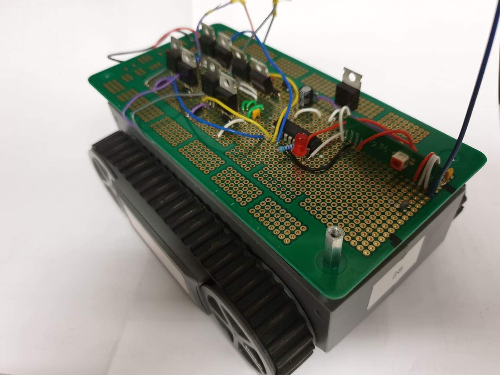
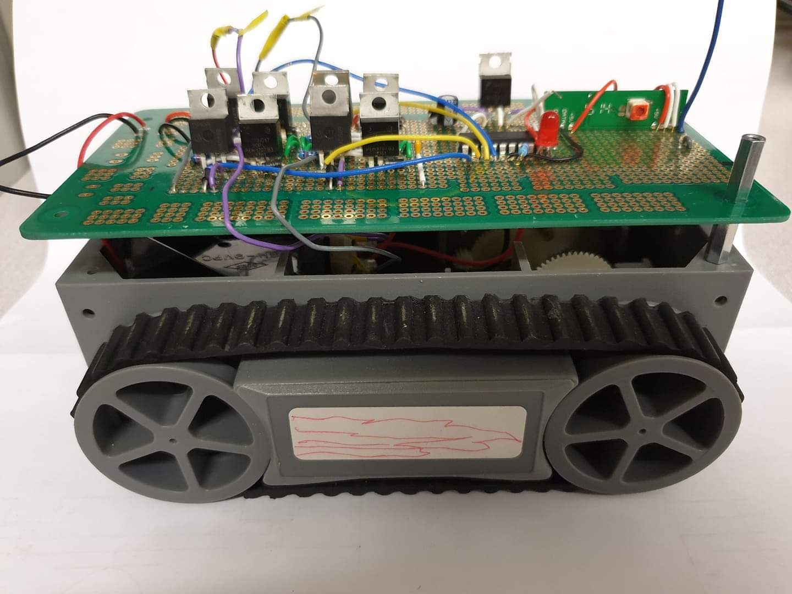

In a team of 3, I successfully built a remote controlled buggy. It consisted of a RF-transmitter, RF-reciever and an H-bridge. After the transmitter sends the data to the reciever, it is sent to the decoder. The decode splits the data into address bits and data bits, which are then used by the H-bridge to steer the buggy.


Challenges Faced
Reciever was not recieving any bits - the transmitter had a loose connection with the power supply as we tested the entire circuit on a breadboard initially. Replacing the damaged wire solved the issue. The end product had the circuit soldered onto a PCB. Wires were tested before soldering to ensure the issue did not persist.
Reciever power kept fluctuating - this meant the buggy would unexpectedly stop as the reciever did not function as expected. To solve this, I added a regulator to keep the voltage under operating levels along with a few capacitors and diodes to smooth the signal and remove background noise.
Soldering - this was new to me at the time. With a little practise, I was able to help my team solder the final circuit onto the PCB before the demo.
Time management - At the time, I had quite a lot of deadlines to complete. Additionally, my teammates were not able to contribute much due to the number of courseworks/tests we had. I decided to take responsibilty of the poster as I had completed most of my tasks.